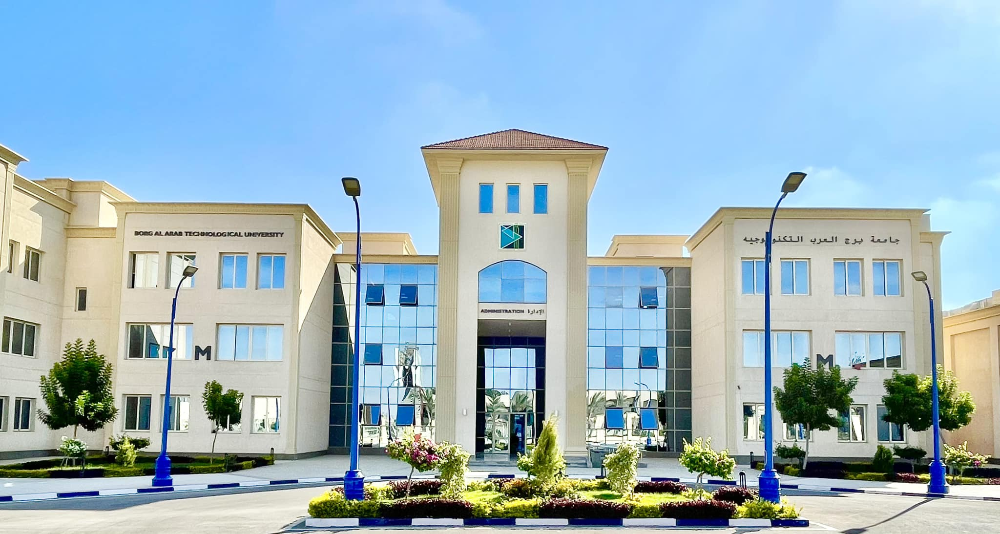
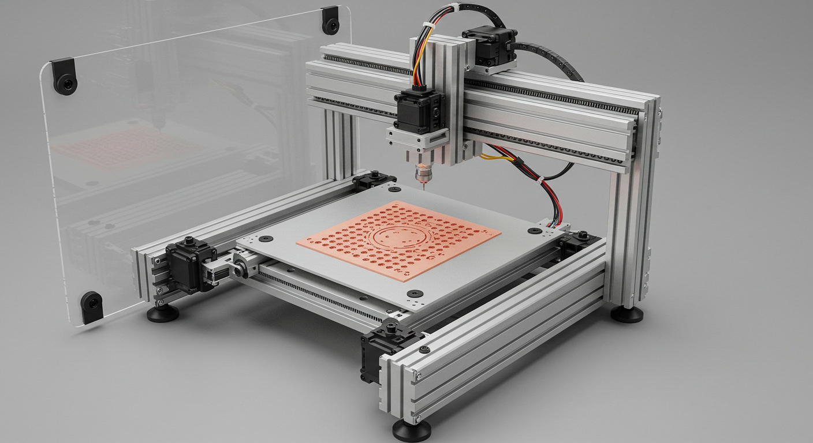
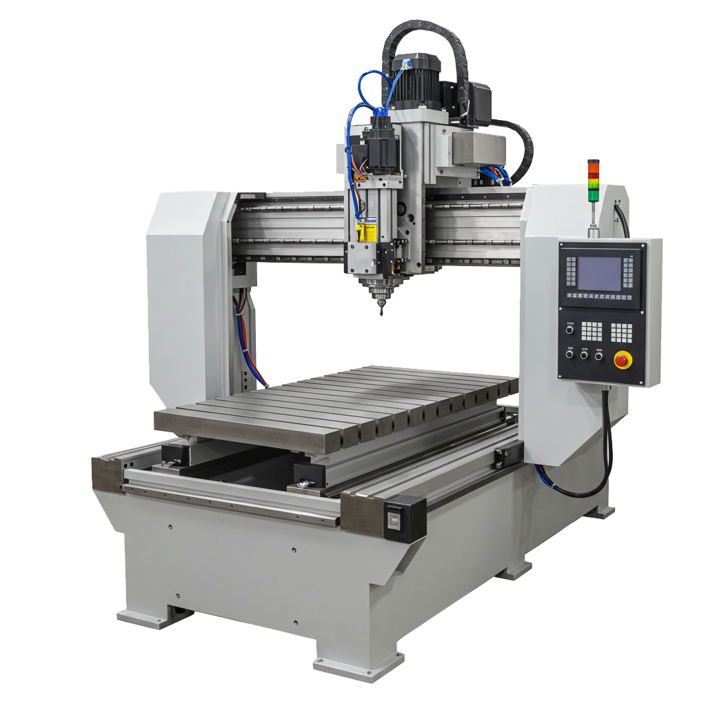
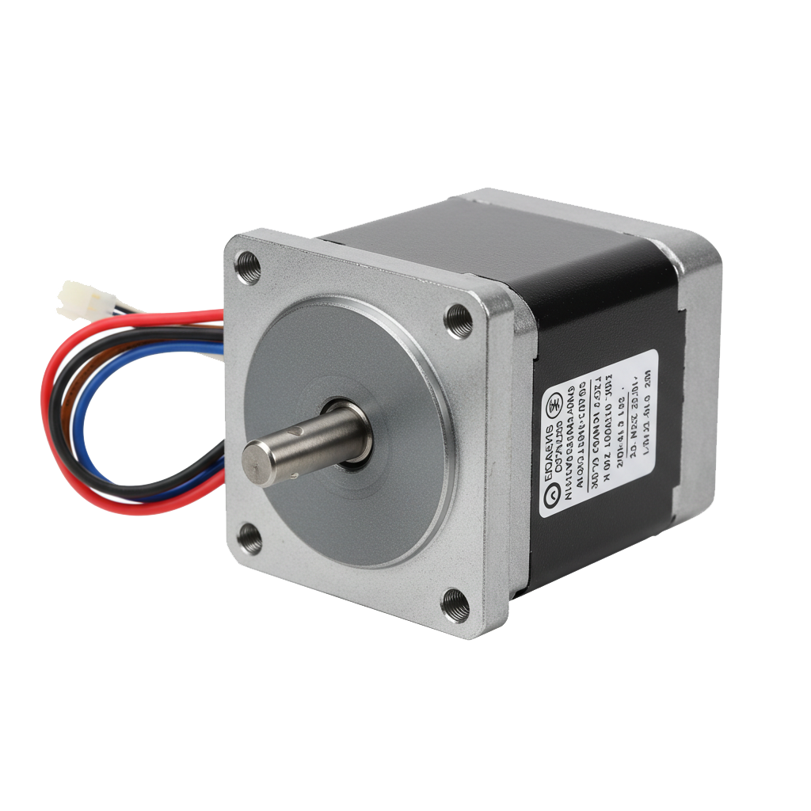
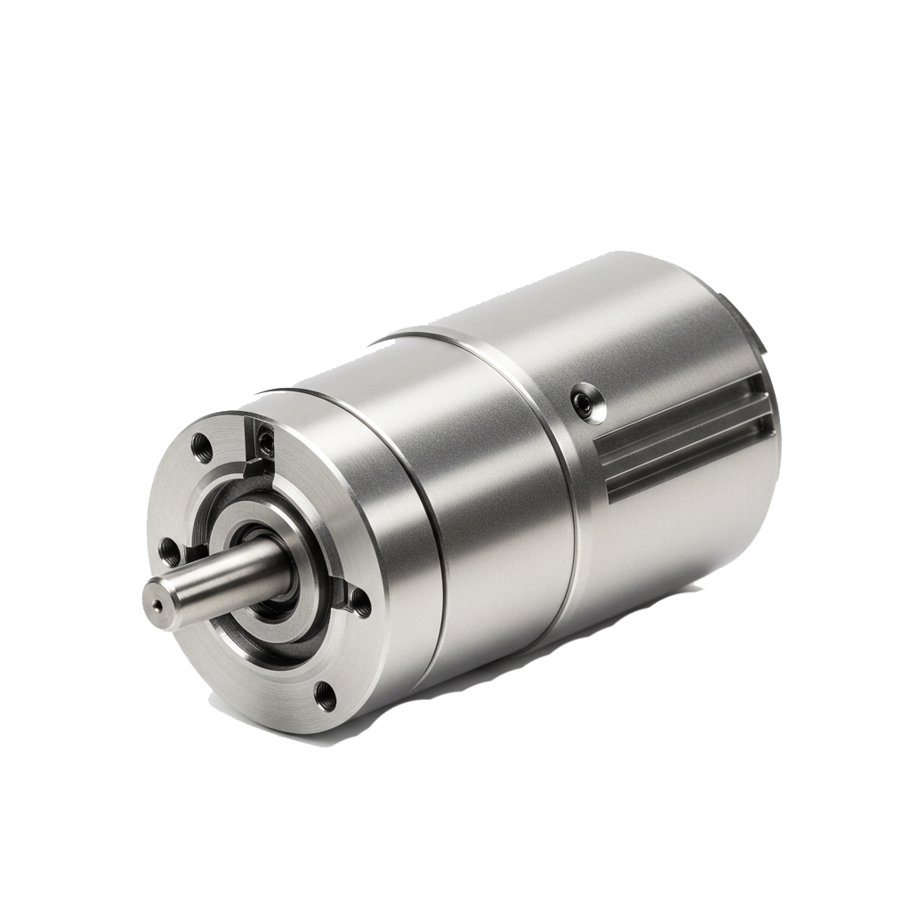
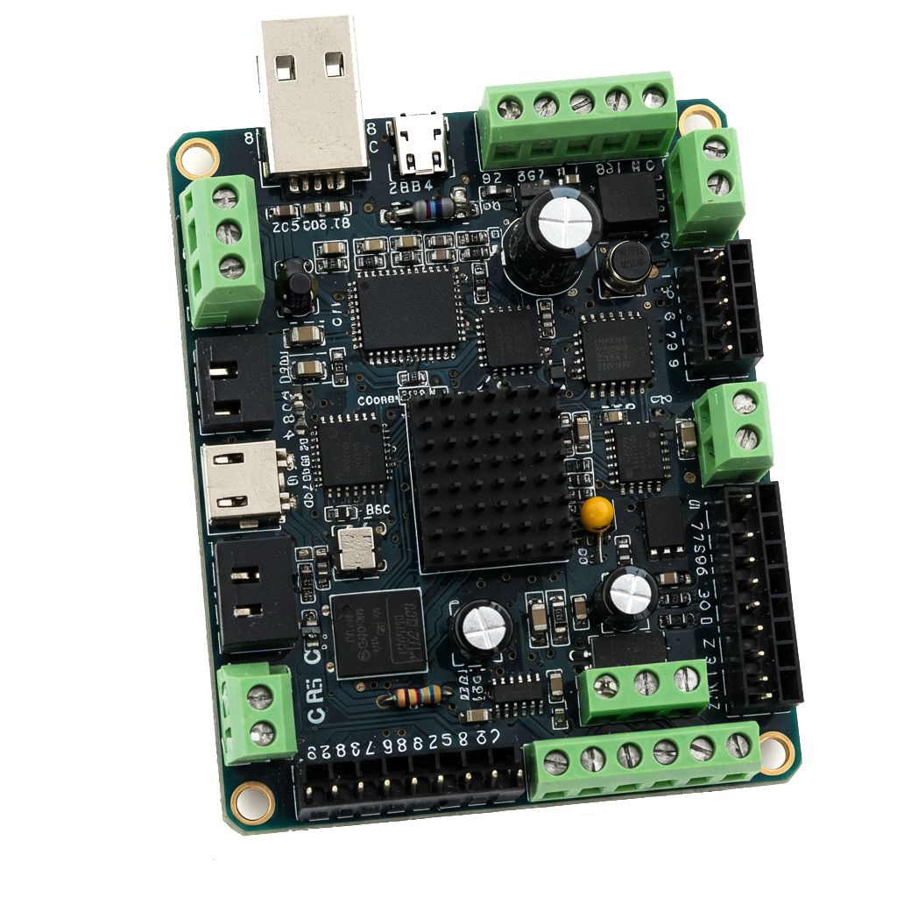
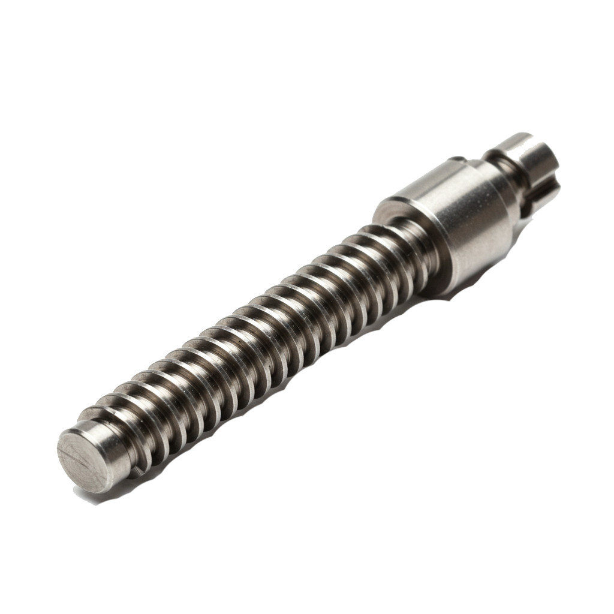
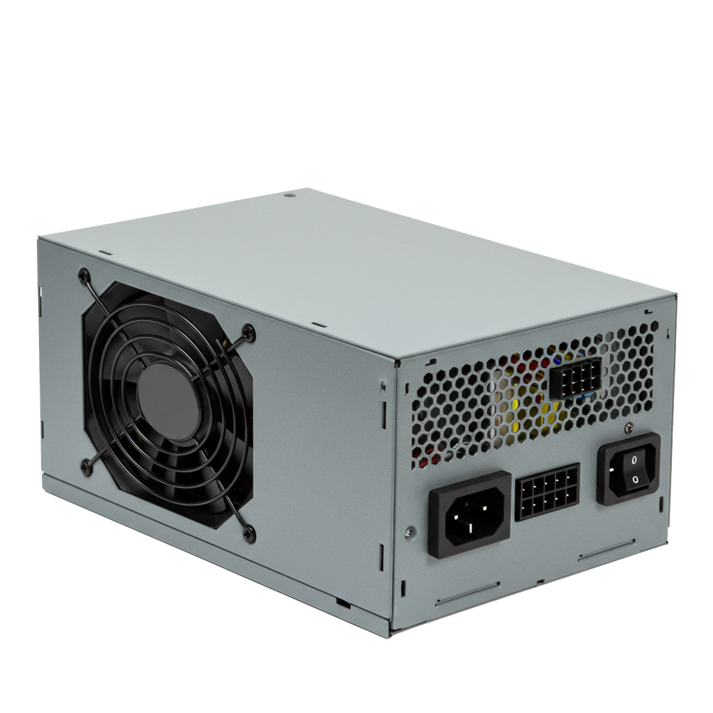
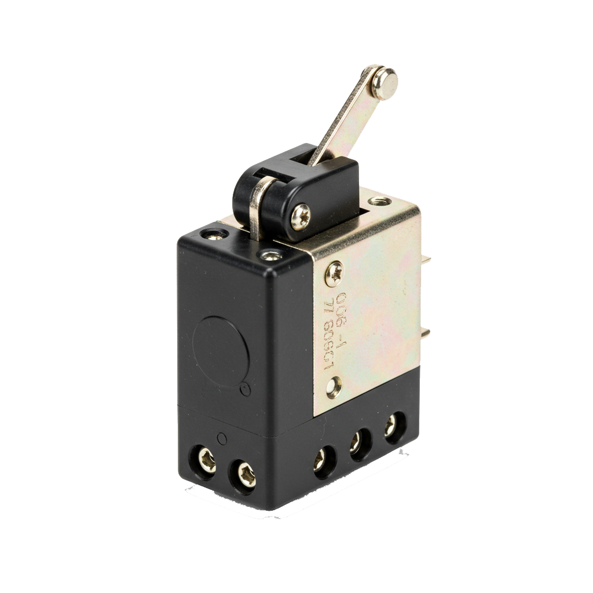

Printed Circuit Boards (PCBs) are the backbone of modern electronics, and CNC machines offer a fast, precise, and cost-effective way to produce them. A CNC (Computer Numerical Control) machine can drill, cut, and engrave PCB materials based on a digital design, making it essential in prototyping and small-scale production. In this project, we present the key components and functions of a CNC machine built specifically for PCB fabrication.

CNC (Computer Numerical Control) machines have become a cornerstone in modern manufacturing due to their high precision, efficiency, and ability to automate complex tasks. These machines drastically reduce human error, enhance productivity, and allow for the creation of intricate designs with exceptional accuracy. In the field of PCB (Printed Circuit Board) production, CNC machines are invaluable tools for rapid prototyping, customized circuit fabrication, and small-scale manufacturing. They empower engineers, students, and innovators to bring digital designs to life with speed and accuracy—redefining the way we build and test electronic hardware.
To explore the practical use of the CNC 3018 in PCB manufacturing.
To gain hands-on experience in assembling, wiring, and configuring a CNC machine.
To understand how mechanical components integrate with electronic systems.
To develop skills in CAD (Computer-Aided Design) and CAM (Aided Manufacturing).
To demonstrate a fully functional CNC model that reflects innovation and precision.
The CNC 3018 is a compact desktop CNC machine known for its affordability, accuracy, and flexibility.
It features a durable aluminum frame, high-speed spindle motor, and three-axis motion control powered by stepper motors.
This machine is widely used in educational and prototyping environments for tasks such as PCB engraving, wood carving, and plastic cutting.
Its open-source software support and modular design make it ideal for beginners, students, and developers who wish to explore CNC technologies in depth.

Provides the foundation and stability for the machine.

Drive the spindle and work platform along three axes with precise movements.

Performs engraving, cutting, and drilling operations.

Acts as the brain of the machine, interpreting G-code and sending signals to the motors.

Guide the motion system smoothly and accurately

Supplies the necessary voltage and current for machine operation.

Prevent overtravel of moving parts and add safety to the machine.